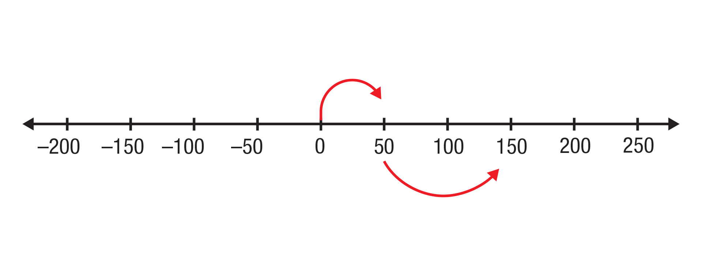
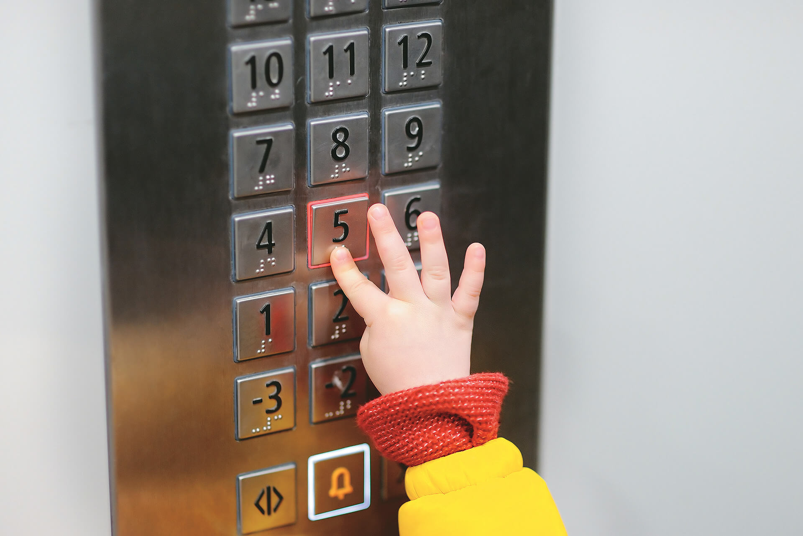
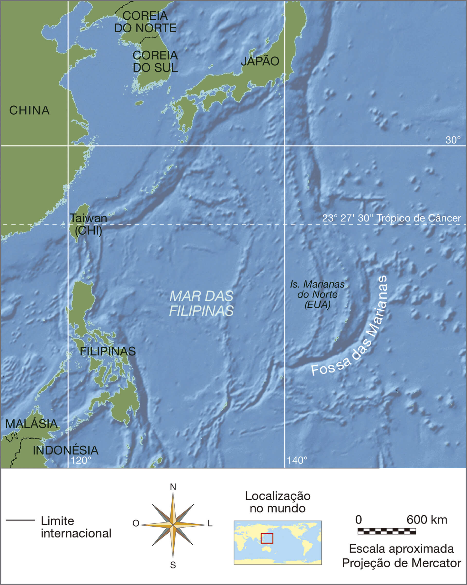

Inventada em meados do século passado, a geladeira mudou nossos hábitos alimentares e, agora, é peça fundamental em qualquer cozinha.
Com relação à temperatura, você sabe qual é a diferença entre freezer e congelador?
Ao comprar um produto congelado, o que se deve considerar para armazená-lo na geladeira?
Objetivos
Ao final deste capítulo, espera-se que você reconheça ideias associadas a números inteiros; saiba representá-los (localizá-los) na reta numerada, bem como compreenda os conceitos de módulo e de oposto ou simétrico; compare e ordene
dois ou mais números inteiros e saiba usá-los em seu cotidiano. Além disso, você representará figuras no plano cartesiano por meio das coordenadas de seus vértices nos quatro quadrantes, fará ampliações e reduções de polígonos e
reconhecerá quando as figuras são semelhantes e quando são congruentes.
Ideias iniciais sobre números inteiros
Você já estudou os números naturais, aqueles usados em contagens e para representar algumas medidas. Observe, na imagem a seguir, esses usos.
A sequência dos números naturais é formada por 0, 1, 2, 3, 4, 5, 6, 7, 8, 9, 10, 11, 12, 13, ... e, com ela, obtemos o conjunto dos números naturais, o qual é representado por:
O primeiro elemento desse conjunto é o zero. O sucessor de 0 é 1, o sucessor de 1 é 2, de 2 é 3, de 3 é 4 e, assim, consecutivamente. Usamos reticências para indicar que existem infinitos números naturais.
Há muito tempo, os comerciantes perceberam que havia situações nas quais os números naturais não eram suficientes para expressar e resolver certos problemas do dia a dia.
No período em que ocorria o Renascimento, houve, também, o desenvolvimento comercial europeu com o descobrimento de novas terras por meio das navegações. Com o aumento do comércio e da circulação de moedas, surgiram os bancos. Os
registros que contabilizavam os lucros e prejuízos também foram intensificados, fazendo uso dos números acompanhados dos sinais + ou –.
Pensando dessa forma, o comerciante que tinha um saco de 10 kg de farinha e recebesse mais 3 kg do mesmo produto registrava na embalagem “+3” para indicar o excesso. Se ele vendesse 5 kg de arroz de um saco com 10 kg, marcava “–5” para
indicar a falta de parte do produto. Os matemáticos gostaram dessa forma de registro e ampliaram a ideia para outras situações.
No início deste capítulo, vimos que, para indicar as temperaturas que o freezer e o congelador podem atingir, foram usados números acompanhados do sinal –. Agora, vamos estudar esses números e os que são precedidos do sinal +
ou, ainda, os que não têm sinal algum.
Na situação do freezer e do congelador, os números –15 e –5 indicam temperaturas abaixo de um referencial estabelecido pela escala de temperatura.
No Brasil, utilizamos a escala Celsius para indicar temperaturas. Essa escala, desenvolvida por Anders Celsius em 1742, considera os estados físicos da água: ao passar do estado líquido para o sólido, o ponto de congelamento é 0 e, ao
passar do estado líquido para o gasoso, o ponto de vapor é 100. O intervalo entre os pontos fixos foi dividido em 100 partes iguais e cada uma corresponde a um grau Celsius, indicado por 1 °C.
Observe, ao lado, as temperaturas correspondentes ao ponto de fusão e de ebulição da água ao nível do mar.
Temperaturas acima de 0 °C têm valor positivo e podem ser representadas usando o sinal + ou sem ele. Exemplos: +1 °C, +2 °C, +3 °C, 5 °C, 7 °C.
As temperaturas abaixo de 0 °C têm valor negativo e devem ser escritas usando o sinal –. Exemplos: –1 °C, –2 °C, –3 °C.
Jack Art. 2017. Digital.
Para indicar 0 °C, não usamos nenhum dos sinais, pois o zero não é positivo nem negativo.
Dizemos que os números naturais correspondem aos números inteiros positivos e o zero.
A sequência dos números naturais forma o conjunto dos números naturais, que é representado por: ℕ = {0, 1, 2, 3, 4, 5, 6, 7, 8, 9, 10, 11, 12, ...}
Reunindo os números inteiros positivos, os inteiros negativos e o zero, obtemos a sequência dos números inteiros: ..., –4, –3, –2, –1, 0, +1, +2, +3, +4, ...
A sequência dos números inteiros forma o conjunto dos números inteiros, cujo símbolo é ℤ. ℤ = {..., –4, –3, –2, –1, 0, +1, +2, ...} ou ℤ = {..., –4, –3, –2, –1, 0, 1, 2, ...} Note que todo número natural é inteiro e que há infinitos
números inteiros.
O infográfico ao lado apresenta uma montagem comparativa entre o ponto mais alto e o mais profundo da Terra, embora localizados em pontos diferentes do planeta.
Note que o nível do mar foi o referencial usado, portanto, ele é o ponto zero. Acima do referencial estão as altitudes positivas e, abaixo, as altitudes negativas, denominadas profundidades.
Podemos representar as altitudes positivas com o sinal + e as profundidades com o sinal – na frente dos números. Assim, a altitude do Monte Everest é representada por +8 848; e a profundidade das Fossas das Marianas, por –10 911.
b) De acordo com a imagem, quantos andares há no subsolo?
c) E se fossem três andares no subsolo, como seria a representação deles?
Ao cozinhar, devemos ficar atentos à duração de preparo, ao armazenamento e à distribuição do alimento, pois micro-organismos, como as bactérias, multiplicam-se rapidamente. Em pouco tempo, o alimento pode apresentar alta
quantidade de bactérias, que são capazes de causar doenças.
Para isso, ela usa o altímetro, que é um instrumento utilizado para registrar altitudes de acordo com referenciais, como o nível do mar. Essas altitudes podem ser positivas, se acima do nível do mar, e negativas, se abaixo dele.
Utilize números inteiros para representar essas situações.
a) A altitude atingida por Ana pode ser representada por +1 400 m. O que isso significa?
b) O ponto mais alto já escalado por Ana fica a, aproximadamente, 2 134 m de altitude. Como seria o registro dessa altitude?
c) Ana fez outra viagem, agora para Fernando de Noronha. O ponto mais alto desse arquipélago é o Morro do Pico, com 321 m de altitude.
Ana também é mergulhadora e fez uma foto 18 m abaixo do nível do mar, com a temperatura da água a 27 °C. Como podemos registrar essas informações com números inteiros?
Esses números inteiros indicam horas a mais ou a menos em relação ao Meridiano de Greenwich. Para entender melhor, localize no mapa a cidade de Brasília. Ela está no fuso –3, o que indica que os relógios nessa cidade marcam 3 horas
a menos que em Greenwich ou em relação às cidades desse fuso (0). Assim, quando em Greenwich são 20 h, em Brasília são 17 h. Quando em Brasília são 20 h, em Greenwich são 23 h.
Vamos considerar Cidade do México (M), Brasília (B) e Hong Kong (H) e os respectivos fusos.

Note que, de Brasília a Hong Kong, vamos de –3 até +8, ou seja, são 11 fusos de diferença. Isso significa que os relógios marcam 11 horas a mais em Hong Kong do que os de Brasília. Então, se em Brasília os relógios estão marcando 6
h, em Hong Kong eles marcam 17 h do mesmo dia.
Fazendo o raciocínio contrário, temos que: se em Hong Kong os relógios marcam 20 h, em Brasília marcam 9 h.
Da Cidade do México para Brasília, há uma diferença de 3 horas a menos. Se em Brasília são 16 h, na Cidade do México são 13 h. Considerando esse horário, que horas serão em Hong Kong?
São 6 horas até Greenwich e mais 8 horas até Hong Kong. Por isso, somamos 14 ao horário da Cidade do México.
Assim, 13 + 14 = 27 representa mais do que 1 dia. Como Hong Kong está à frente, fazemos 27 – 24 = 3.
Isso mesmo, serão 3 h do dia seguinte!
Agora é a sua vez! Esta tabela apresenta a diferença, em horas, entre algumas cidades e o horário de Brasília.
Cidade
Fuso horário em relação a Brasília*
Barcelona
+5
Buenos Aires
0
Montreal
–2
Los Angeles
–4
*Desconsiderando o horário de verão.
a) O que significam os números da tabela?
b) Se em Brasília forem 8 horas, que horas serão em Barcelona?
c) Quando, em Buenos Aires, os relógios estiverem marcando 15 horas, que horas serão em Brasília?
d) Se em Brasília forem 10 horas, que horas serão em Montreal?
e) Se em Los Angeles os relógios estiverem marcando 18 horas, que horas serão em Brasília?
f) Quando, em Montreal, os relógios marcam 4 horas, que horas são em Barcelona?
Representação na reta numérica
Vamos analisar as temperaturas mínimas mensais registradas em determinado ano, na cidade de Frankfurt, na Alemanha, e atribuir os números inteiros correspondentes a elas a pontos de uma reta numérica.
Nessa tabela, há somente números inteiros. Os números positivos indicam temperaturas acima de zero grau e os números negativos representam as temperaturas abaixo de zero grau.
a) Na cidade de Frankfurt, qual é o trimestre do ano que apresenta as maiores temperaturas mínimas?
b) Se uma pessoa prefere temperaturas abaixo de zero grau, deve visitar a cidade em quais meses?
c) Descubra qual foi a temperatura mínima registrada em sua cidade até hoje. Descreva como e quando isso ocorreu.
Associamos essas temperaturas a pontos de uma reta. O zero, ponto P, é a origem; à direita dele, temos o sentido positivo (+), no qual representamos números maiores que o zero, e, à esquerda, temos o sentido negativo, no qual
representamos números menores que o zero.
O ponto A indica –2, que corresponde à temperatura mínima em janeiro. Ele está localizado no sentido negativo da reta, 2 unidades à esquerda da origem P. O ponto D indica o +5, que corresponde à temperatura mínima em abril. Ele está a
5 unidades da origem P, no sentido positivo da reta.
Note que há um ponto na reta numérica para cada número inteiro, mas nem todo ponto da reta corresponde a um número inteiro.
Em uma reta numérica, as distâncias entre os números são sempre iguais.
Na reta acima, a distância é de uma unidade. Quando essa distância é igual a um, o número que está imediatamente à direita do outro é o sucessor e o número que está imediatamente à sua esquerda é o
antecessor. Dizemos, também, por exemplo, que os números –2, –1 e 0 são números consecutivos, pois um vem imediatamente após o outro.
Observe os pontos representados na reta numérica e responda às questões.
a) Que ponto corresponde à temperatura mínima de maio e em que sentido da reta ele está marcado?
b) O número inteiro indicado por B é antecessor de qual número?
c) Que ponto corresponde ao sucessor de 13?
d) Quais são os dois números consecutivos do número inteiro representado por J?
Atividades
Represente na tabela os números correspondentes aos pontos incados na reta numérica.

Ponto
B
E
K
C
D
A
Número inteiro
–6
+5
+3
–2
+2
–5
Em cada item, escreva o número inteiro representado pelos pontos indicados em cada tabela.
a)
Ponto
K
A
P
Número inteiro
b)
Ponto
Z
P
K
Número inteiro
c)
Ponto
P
M
S
Número inteiro
d)
Ponto
B
P
S
Número inteiro
Com o auxílio de uma régua, localize, nesta reta, –4, +8, –1 e –6, sabendo que A e B representam os números 2 e 7, respectivamente.
Com base na reta numérica, julgue cada afirmação, escrevendo V para as verdadeiras e F para as falsas.
a) (___) O antecessor de –3 é –2.
b) (___) O sucessor de +2 é +3.
c) (___) Os números 2, 4 e 6 são consecutivos.
d) (___) O antecessor de –6 é –7.
e) (___) Os números –5, –4 e –3 são consecutivos.
f) (___) O antecessor de –1 é 0.
g) (___) O sucessor de –6 é –5.
Em um software, é possível colorir figuras de acordo com uma escala de transparência de cores.
a) Na escala de transparência, as distâncias entre os traços são iguais. Após o zero, que número corresponde ao primeiro traço?
b) Que número está indicado na escala para esse tom de verde?
c) Indique o 90 na escala de transparência.
(Prova Brasil) A figura a seguir é uma representação da localização das principais cidades ao longo de uma estrada, onde está indicada por letras a posição dessas cidades e por números as temperaturas registradas em °C.
Com base na figura e mantendo-se a variação de temperatura entre as cidades, o ponto correspondente a 0 °C estará localizado:
a) sobre o ponto M.
b) entre os pontos L e M.
c) entre os pontos I e J.
d) sobre o ponto J.
Módulo de um número inteiro
No esquema abaixo, estão representados alguns pontos comerciais próximos à casa de Lucas, além do banco e da igreja. Observe as distâncias indicadas e responda às questões.
a) Qual a distância entre a panificadora e a igreja?
b) Lucas saiu de casa e foi à feira, depois foi ao banco retirar dinheiro e voltou para casa. Quantos metros ele percorreu?
c) O banco fica a que distância da igreja?
Agora, considere os pontos A, M e P indicados nesta reta numérica:
Na reta numérica, podemos determinar a distância de qualquer ponto em relação à origem. Observe que o ponto P está a 3 unidades de distância da origem, representada pelo ponto A (zero). O ponto M, por sua vez, está a 4 unidades de
distância da origem.
A distância entre qualquer ponto e a origem da reta é chamada de módulo, ou valor absoluto, do número representado pelo ponto.
Então, o módulo de +3 é 3, pois é a distância do ponto P até a origem.
Já o módulo de –4 é 4, pois é a distância do ponto M à origem.
Podemos indicar o módulo, ou valor absoluto, de um número com duas barras verticais, assim:
| +3 | = 3
| –4 | = 4
| 0 | = 0
Atividades
Determine:
a)| 8 |=
b)| -10 |=
c)| -1 |=
d)| +42 |=
e)| -970 |=
f)| -25 |=
Carlos, Sílvia, Laura e Marcos moram em um condomínio. Os números indicados na figura ao lado representam a distância de cada prédio até a rua central.
Considerando somente as distâncias indicadas, responda às questões.
a) Quantos metros Marcos terá que se deslocar para ir de seu prédio até o de Carlos?
b) Laura saiu de seu edifício, foi buscar Sílvia no prédio onde ela mora e, juntas, foram até o prédio de Marcos. Quantos metros Laura se deslocou?
Qual seria outra forma de os três amigos se encontrarem no prédio de Marcos?
Observando a reta numérica a seguir, dê a distância de:
a) +5 a +1.
b) –6 a 0.
c) –4 a +4.
d) –9 a –2.
e) –3 a –3.
f) –7 a –2.
Qual é a distância entre os pontos que correspondem aos seguintes números?
a) –13 e 4
b) 0 e 18
c) –5 e 1
d) +10 e +9
e) –30 e –7
f) –50 e +50
Escreva todos os números inteiros compreendidos entre:
a) –2 e 2.
b) 0 e 5.
c) –13 e –15.
d) –8 e 8.
Quantos números inteiros há entre –10 e 10?
Oposto ou simétrico
Nesta outra reta numérica, foram representados os pontos O (origem), A e B.
a) Qual é a distância do ponto B à origem?
b) E do ponto A à origem?
Quando dois pontos estão à mesma distância da origem, dizemos que os números associados a esses pontos são números simétricos ou números opostos.
Outros pontos foram marcados nessa mesma reta. Se fixarmos a ponta-seca do compasso na origem da reta, podemos perceber que as distâncias de pontos simétricos até a origem são as mesmas. Observe-os e responda às questões:
c) Qual ponto é o simétrico de C? Explique sua resposta.
d) Qual ponto é o simétrico de F?
e) Imagine um eixo de simetria passando exatamente sobre a origem O e no qual pudéssemos dobrar a reta ao meio sobre esse eixo. O que aconteceria com os pontos A e B?
Dois números inteiros são simétricos, ou opostos, se têm o mesmo módulo.
f) Existe número inteiro que não tem simétrico?
Quando dois números inteiros são simétricos, é comum falarmos que um é o oposto do outro porque eles estão em lados opostos da reta numérica e à mesma distância em relação à origem.
Por exemplo, como –5 e 5 são simétricos, poderíamos falar que o oposto de 5 é –5 e que o oposto de –5 é 5.
Simbolicamente, podemos representar o simétrico, ou o oposto, de um número escrevendo o número precedido do sinal – (menos). Assim:
–(+6) significa o simétrico, ou oposto, de seis positivo → –(+6) = –6
–(–8) significa o simétrico, ou oposto, de oito negativo → –(–8) = 8
Atividades
Escreva o significado das expressões.
a) –(+1)
b) –(–3)
c) –(+16)
d) –[–(+14)]
Escreva o número inteiro correspondente às expressões.
a) –(+17) =
b) –(–26) =
c) –(+50) =
d) –(+4) =
e) –{–(+9)} =
f) –{–(–36)}=
Quais são os números inteiros que têm módulo:
a) menor do que 4?
b) maior do que 5?
Localize, na reta numérica, os pontos indicados pelos números a seguir.
a) O oposto de –6, como ponto A.
b) O simétrico de +5, como ponto B.
c) O oposto do simétrico de 3, como ponto C.
d) O oposto do módulo de –2, como ponto D.
e) O simétrico de –1, como ponto E.
Analise cada afirmação e julgue escrevendo V para as verdadeiras e F para as falsas.
(___) O oposto de 0 é –0.
(___) O simétrico de –16 é 16.
(___) O oposto do simétrico de +53 é –53.
(___) O módulo de –27 é 27.
(___) O antecessor de –500 é –499.
(___) O sucessor de –398 é –397.
Comparação de números inteiros
No mapa a seguir, é possível visualizar as temperaturas de janeiro, em graus Celsius (°C), de algumas cidades do mundo.
Previsão do tempo para o mês de janeiro em algumas cidades do mundo
Responda às questões com base nas temperaturas indicadas no mapa.
a) Qual é a temperatura mais elevada?
b) Qual é a temperatura mais baixa?
c) Qual é a temperatura negativa mais próxima de 0 °C?
d) Comparando as temperaturas das cidades do continente americano, qual é a maior?
Suponha que a reta numérica abaixo é a escala de um termômetro, na qual as temperaturas negativas estão à esquerda de zero; e as positivas, à direita de zero. Sobre ela estão indicadas as temperaturas em °C que aparecem no mapa.
Agora, responda às questões pensando nas temperaturas com base nos números inteiros indicados na reta numérica.
a) Ao comparar duas temperaturas representadas por números inteiros positivos, qual é a maior?
Escreva dois exemplos usando o sinal > :
b) Observando a representação de temperaturas por dois números inteiros negativos, qual delas é a mais alta?
Escreva dois exemplos usando o sinal < :
c) Quais números representam as temperaturas maiores do que zero?
Escreva dois exemplos usando o sinal > :
d) E quais números inteiros representam as temperaturas menores do que zero?
Escreva dois exemplos usando o sinal < :
Ao compararmos dois números inteiros positivos, o que estiver mais afastado do zero será o maior, ou seja, o que estiver mais à direita na reta numérica.
Qualquer número inteiro positivo é maior do que zero e de qualquer número inteiro negativo.
O zero é maior do que qualquer número inteiro negativo.
Ao compararmos dois números inteiros negativos, o maior deles será o que estiver mais próximo do zero, ou seja, o que tem menor módulo.
Atividades
Preencha as lacunas utilizando os sinais <,> ou =.
a) +5 __________ +10
b) 28 __________ +14
c) –36 __________ 13
d) +54 __________ –67
e) –27 __________ –9
f) 0 __________ –71
g) 48 __________ 0
h) +8 __________ 8
Na reta a seguir, foram indicados os pontos Z, K e P.
De acordo com esses pontos, assinale as afirmações verdadeiras.
a) K > P > Z
b) K < P < Z
c) Z < K < P
d) Z > K > P
e) P > K > Z
Utilizando o símbolo <, escreva a sequência em ordem crescente em cada item.
a) –8, 9, 0, –3.
b) +12, 29, –50, –16.
c) 100, –57, 3, –1.
d) –7, +8, –10, –38.
De acordo com o conjunto dos números inteiros, complete as lacunas.
a) O maior número inteiro negativo é o número _______________ .
b) O menor número inteiro positivo é o número _______________ .
c) O número _______________ é neutro, pois não é positivo nem negativo.
d) Existem infinitos números inteiros, portanto, não podemos dizer qual é o _______________ número inteiro negativo nem o _______________ número inteiro positivo.
Os termômetros a seguir contêm duas escalas: uma em graus Celsius (°C), usada no Brasil, e a outra em graus Fahrenheit (°F), usada em al- guns outros países, como nos Estados Unidos.
a) Que temperaturas estão indicadas nos termômetros, aproximadamente, em cada uma das escalas?
b) Quanto esses termômetros marcarão, em graus Celsius, se a temperatura
subir 7 °C?
descer 2 °C?
c) Elabore um problema para seu colega re- solver envolvendo as temperaturas em °C apresentadas.
Plano cartesiano
Até o momento, você localizou pontos de uma reta usando números inteiros e viu que cada ponto da reta está associado a um único valor numérico.
Agora, vamos representar pontos no plano cartesiano utilizando números inteiros. Observe os eixos (retas numéricas perpendiculares entre si) que formam o sistema de coordenadas cartesianas, também conhecido como
plano cartesiano. Essas retas dividem o plano em quatro regiões, que são denominadas quadrantes.
O eixo das abscissas é o eixo x e o eixo das ordenadas é o eixo y. Eles se encontram na origem O.
Par ordenado
A representação de um ponto no plano cartesiano utiliza duas coordenadas referenciais. A primeira coordenada é x, denominada abscissa do ponto, e a segunda coordenada é y, denominada ordenada do ponto.
Esse par de coordenadas recebe o nome de par ordenado, porque as coordenadas são escritas de acordo com uma ordem estabelecida (primeiro a abscissa, depois a ordenada). O ponto O é chamado de origem do sistema de coordenadas cartesianas e suas coordenadas são (0, 0).
Observe a representação do ponto A (3, 5), localizado no 1.º quadrante, e do ponto B (–3, 4), localizado no 2.º quadrante.
Agora, represente os pontos C (–2, 2), D (–4, –4), E (0, –4), F (1, –2), G (5, –3) e H (6, 0).
a) O ponto D está em qual quadrante?
b) Quais pontos estão no 4o. quadrante?
c) Quais pontos estão localizados sobre um dos eixos do sistema?
No eixo horizontal (eixo das abscissas), os pontos correspondentes aos números inteiros positivos estão à direita da origem e os pontos correspondentes aos números inteiros negativos estão à esquerda da origem.
No eixo vertical (eixo das ordenadas), os pontos correspondentes aos números inteiros positivos estão acima da origem e os pontos correspondentes aos números inteiros negativos estão abaixo da origem.
Quando o ponto está sobre algum eixo, dizemos que ele pertence àquele eixo e a nenhum dos quadrantes.
No plano a seguir, construa um triângulo de vértices A (3, 4), B (3, 1), C (1, 1).
a) Faça a reflexão desse triângulo em relação ao eixo vertical (y) obtendo o triângulo DEF.
b) Agora, faça a reflexão do triângulo ABC em relação ao eixo horizontal (x) para obter o triângulo GHI.
c) Os triângulos refletidos têm lados com as mesmas medidas do triângulo ABC?
d) E os ângulos internos dos triângulos refletidos, são congruentes aos ângulos de ABC?
e) Desenhe o triângulo JKL no 3o. quadrante, obtido pela reflexão do triângulo DEF.
f) Complete a tabela com as coordenadas dos vértices dos triângulos refletidos.
Triângulo
Vértices do triângulo
ABC
A (3, 4)
B (3, 1)
C (1, 1)
DEF
GHI
JKL
g) Observando as coordenadas dos quatro triângulos, escreva V para as afirmações verdadeiras e F para as falsas.
(___) As abscissas dos vértices do triângulo ABC são simétricas às abscissas dos vértices de DEF.
(___) As ordenadas dos vértices do triângulo GHI são as mesmas dos vértices de JKL.
(___) O oposto das coordenadas dos vértices do triângulo DEF são as coordenadas dos vértices de JKL.
(___) As ordenadas dos vértices do triângulo DEF são opostas às ordenadas dos vértices de GHI.
(___) O oposto das coordenadas dos vértices do triângulo JKL são as coordenadas dos vértices de ABC.
Atividades
Siga as orientações abaixo para jogar A caçada.
Reúna-se com um colega e observe os mapas 1 e 2, a legenda e a tabela de pontos do jogo.
Sem mostrar para o outro, cada jogador deve traçar no mapa 1, o eixo x sobre qualquer linha horizontal da malha quadriculada e o y sobre qualquer linha vertical e numerá-los de um em um, a partir da origem.
Depois, combinem quem inicia o jogo. Cada um, na sua vez, indica um par ordenado de números inteiros para encontrar um dos 13 itens e descobrir onde estão traçados os eixos x e y do adversário.
As coordenadas indicadas pelo colega serão marcadas no mapa 1 e suas tentativas, no mapa 2.
Quando o par ordenado indicado está sobre qualquer parte de um dos itens, considera-se que o item foi atingido. O jogador marca um ponto na tabela e um X no elemento eliminado. Se não atingir um item ou se o
ponto estiver fora do mapa, perde um ponto. O jogador deve ser informado quando o ponto se localiza fora do mapa.
O jogo acaba quando todos os itens forem atingidos por um dos jogadores. Vence quem fizer mais pontos.
Após finalizar o jogo, observe os eixos x e y do mapa 3 e escreva:
a) um par ordenado para atingir a âncora.
b) o elemento atingido em (–5, 2).
c) o elemento que está em (–4, –4).
d) os pares que atingem a rosa dos ventos.
JOGO − A CAÇADA
Mapa 1
Mapa 2
Mapa 3
Construa, no plano cartesiano, o polígono ABCDE, cujos vértices são:
A (–1, 3), B (–3, 3), C (–3, 1), D (–1, 1) e E (–2, 2).
a) Faça a reflexão desse polígono em relação ao eixo y e depois em relação ao eixo x.
b) Desenhe um polígono no 4º. quadrante, obtido pela reflexão de ABCDE em relação ao eixo y, ou em relação ao eixo x.
c) Os lados dos polígonos refletidos são congruentes aos lados correspondentes do polígono ABCDE?
Desenhe, no plano cartesiano, o triângulo ABC com vértices nos pontos A (3, 1), B (1, 3) e C (5, 2).
a) Represente o triângulo simétrico ao triângulo ABC em relação ao eixo das ordenadas.
b) Elabore afirmações comparando as coordenadas dos vértices de cada um dos triângulos.
Os pontos A e C representados a seguir são vértices não consecutivos de um quadrado. Identifique, no plano cartesiano a seguir, os vértices que estão faltando.
Descreva como você os descobriu.
Ampliação e redução
Observe os polígonos construídos neste plano cartesiano:

a) Esses polígonos apresentam a forma de qual quadrilátero?
b) Escreva as coordenadas dos vértices do polígono ABCD.
c) Agora, escreva os vértices do polígono EFGH.
d) O que é possível perceber em relação às coordenadas de ABCD e EFGH?
e) O que aconteceu com as medidas dos lados de ABCD para o EFGH?
f) O que aconteceu com as medidas dos ângulos de ABCD para o EFGH?
Note que o quadrilátero EFGH é uma ampliação de ABCD ou, então, ABCD é uma redução de EFGH.
Compare estas figuras, observando a quantidade de quadradinhos no interior delas, a forma, a medida dos lados e a medida dos ângulos. Depois, responda às questões propostas.
a) Quais têm a mesma forma?
b) Com relação à medida dos lados, o que aconteceu da figura original (A) para a:
figura B?
figura C?
figura D?
c) Com relação à medida dos ângulos, o que aconteceu da figura A para a:
figura B?
figura C?
figura D?
Observe que a figura B é uma redução de A, a figura D é uma ampliação de A e a figura C é uma reprodução da original.
Ao reduzirmos ou ampliarmos as figuras, obtemos outras semelhantes à original. Ao reproduzirmos uma figura, obtemos outra congruente à original.
A figura ampliada teve todos os lados aumentados da mesma forma (uma unidade a mais), a figura reduzida teve todos os lados reduzidos da mesma forma (metade), porém a medida dos ângulos correspondentes permaneceu a mesma. Na figura
reproduzida, todos os lados permaneceram do mesmo tamanho que a original e os ângulos também.
Dois polígonos são congruentes se têm lados correspondentes com a mesma medida e ângulos também correspondentes com a mesma abertura.
Em uma ampliação ou redução, a forma e os ângulos não se alteram, porém o tamanho da figura aumenta ou diminui de forma proporcional.
Dois polígonos são semelhantes quando os lados correspondentes têm medidas proporcionais (dobro, metade, triplo, entre outras) e os ângulos correspondentes são congruentes (mesma medida).
Atividades
Analise o desenho dos barcos A e B e responda às questões.
a) O que aconteceu com as medidas dos lados correspondentes do barco A para o barco B?
b) Podemos afirmar que a medida de todos os lados do barco B foi reduzida à mesma proporção?
c) Eles são congruentes ou semelhantes? Explique sua resposta.
Complete a ampliação da figura de modo que todos os segmentos sejam duplicados.
Compare essas duas figuras e marque um X nos aspectos geométricos que se mantiveram.
(___) Forma.
(___) Número de quadradinhos no interior da figura.
(___) Medida dos lados.
(___) Medida dos ângulos correspondentes.
Mariana construiu o quadrilátero ABCD no 1o. quadrante deste plano cartesiano.
a) Que quadrilátero ela construiu? E quais são as coordenadas dos vértices do quadrilátero ABCD?
b) Mariana quis saber o que aconteceria se multiplicasse por 2 cada uma das coordenadas dos vértices desse quadrilátero. Escreva as novas coordenadas de A’, B’, C’, D’ e construa o novo
quadrilátero.
c) O quadrilátero A’B’C’D’ é congruente à ABCD? Justifique sua resposta.
O triângulo ABC foi construído no plano cartesiano.
a) Quais são as coordenadas de seus vértices?
b) Divida por dois cada coordenada dos vértices de ABC, reescreva-as e construa o triângulo formado com essas novas coordenadas.
c) Multiplique por dois as coordenadas dos vértices de ABC e reescreva-as. Em seguida, construa o novo triângulo formado.
d) Esses triângulos são semelhantes? Justifique sua resposta.
Organize as ideias
Neste capítulo, estudamos os números inteiros. Complete o quadro a seguir com as principais ideias a respeito de cada tópico (pode ser com explicação e/ou exemplos).
Situações nas quais usamos os números inteiros
Como é formado o conjunto dos números inteiros
Representação dos números inteiros na reta numérica